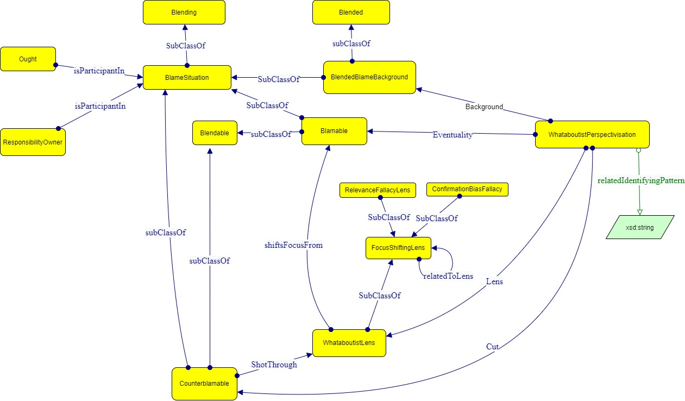

- Imported Ontologies:
- perspectivisation.owl
- Download serialization:


- License:

- Visualization:

Abstract
whata_ontology is an ontology developed for the representation of the argumentative technique known as 'whataboutism' according to the Cognitive Perspectivisation pattern and the Conceptual Blending Theory.Introduction back to ToC
The model is based on the Cognitive Perspectivisation pattern, whose classes have been specialized for allowing a representation of the specific phenomenon. The specialized classes involve the two Frame Occurrences 'Cognitive Perspectivisation' and 'Blending Theory'.whata_ontology: Overview back to ToC
This ontology has the following classes and properties.Classes
- Blamable
- Blame Situation
- Blended Blame Background
- Confirmation Bias Lens
- Counter Blamable
- Focus Shifting Lens
- Relevance Fallacy Lens
- Responsibility Owner
- Whataboutist Lens
- Whataboutist Perspectivisation
Object Properties
Data Properties
Named Individuals
[Ontology Name]: Description back to ToC
The Cognitive Perspectivisation Classes have been specialized by adding several subclasses. 'Whataboutist Perspectivisation' is a specific type of Perspectivisation characterized by the presence of whataboutism. 'Focus Shifting Lens' represents a lens that shifts attention from one concept to another and includes hierarchical subclasses such as Whataboutist Lens, Relevance Fallacy Lens, and Confirmation Bias Lens. 'Blamable' is a sub-kind of Eventuality characterized by features of blamability and blendability, as it is also a subclass of the Blame Situation and Blendable in the Blending Theory pattern. 'Counter Blamable' is a subclass of Cut, representing a counter-blamable situation towards which the lens directs focus, and can be blended with the Blamable Eventuality, making it a subclass of Blendable and Blame Situation as well. 'Blended Blame Background' is a subclass of Background, representing the blended space used in Whataboutist Perspectivisation that combines elements from multiple blamable situations. 'Blame Situation' is introduced as a subclass of blending, representing the element allowing conceptual blending. Additional classes for the Blame Pattern include 'Responsibility Owner', the entity responsible for acting against or in relation to a certain shared principle, and 'Ought', the entity representing a value, duty, or social norm that is being violated. In the case of this modelling activity, the conceptual integration has been used to blend the two situations involved in the analysed focus shifting act and represent the merging of their two Background knowledge into a common background (the Blended Blame Background used in the whataboutist perspectivisation). One input space is represented by the blamable eventuality, meaning the eventuality whose perspectivisation is modified by the whataboutist lens, while the other is the counter-blamable eventuality, meaning the cut that is tailored by the whataboutist lens. In the blended space resulting as output of this conceptual blending there is the blended background knowledge which operates as a prerequisite for the deflect in perspectivisation to be successful. All the mentioned classes involved in this blending process share therefore generic features that are represented by the Blame Situation. Cross-reference for [Ontology Name] classes, object properties and data properties back to ToC
This section provides details for each class and property defined by [Ontology Name].Classes
- Blamable
- Blame Situation
- Blended Blame Background
- Confirmation Bias Lens
- Counter Blamable
- Focus Shifting Lens
- Relevance Fallacy Lens
- Responsibility Owner
- Whataboutist Lens
- Whataboutist Perspectivisation
Blamablec back to ToC or Class ToC
IRI: https://raw.githubusercontent.com/Salvadana/whata_ontology/main/ontology_development/whata_ontology.owl#Blamable
- has super-classes
- Blame Situation c, Blendable ni, Eventuality op
- has members
- Blamable ni
- is also defined as
- named individual
Blame Situationc back to ToC or Class ToC
IRI: https://raw.githubusercontent.com/Salvadana/whata_ontology/main/ontology_development/whata_ontology.owl#BlameSituation
- has super-classes
- Blending ni
- has sub-classes
- Blamable c, Blended Blame Background c, Counter Blamable c
- is in domain of
- has Participant op
- is in range of
- is Participant In op
- is also defined as
- named individual
Blended Blame Backgroundc back to ToC or Class ToC
IRI: https://raw.githubusercontent.com/Salvadana/whata_ontology/main/ontology_development/whata_ontology.owl#BlendedBlameBackground
- has super-classes
- Background op, Blame Situation c, Blended ni
- has members
- Blended Blame Background ni
- is also defined as
- named individual
Confirmation Bias Lensc back to ToC or Class ToC
IRI: https://raw.githubusercontent.com/Salvadana/whata_ontology/main/ontology_development/whata_ontology.owl#ConfirmationBiasLens
- has super-classes
- Focus Shifting Lens c
- has members
- Confirmation Bias ni
Counter Blamablec back to ToC or Class ToC
IRI: https://raw.githubusercontent.com/Salvadana/whata_ontology/main/ontology_development/whata_ontology.owl#CounterBlamable
- has super-classes
- Blame Situation c, Blendable ni, Cut op
- has members
- Counter Blamable ni
- is also defined as
- named individual
Focus Shifting Lensc back to ToC or Class ToC
IRI: https://raw.githubusercontent.com/Salvadana/whata_ontology/main/ontology_development/whata_ontology.owl#FocusShiftingLens
- has super-classes
- Lens op
- has sub-classes
- Confirmation Bias Lens c, Relevance Fallacy Lens c, Whataboutist Lens c
- is in domain of
- related To Lens op, shifts Focus From op
- is in range of
- related To Lens op
Relevance Fallacy Lensc back to ToC or Class ToC
IRI: https://raw.githubusercontent.com/Salvadana/whata_ontology/main/ontology_development/whata_ontology.owl#RelevanceFallacyLens
- has super-classes
- Focus Shifting Lens c
- has members
- Tu Quoque Fallacy ni
Responsibility Ownerc back to ToC or Class ToC
IRI: https://raw.githubusercontent.com/Salvadana/whata_ontology/main/ontology_development/whata_ontology.owl#ResponsibilityOwner
- has super-classes
- Agent c
- is in domain of
- is Participant In op
- is in range of
- has Participant op
- has members
- Responsibility Owner1 ni, Responsibility Owner2 ni
Whataboutist Lensc back to ToC or Class ToC
IRI: https://raw.githubusercontent.com/Salvadana/whata_ontology/main/ontology_development/whata_ontology.owl#WhataboutistLens
- has super-classes
- Focus Shifting Lens c
- has members
- Whataboutist Lens ni
- is also defined as
- named individual
Whataboutist Perspectivisationc back to ToC or Class ToC
IRI: https://raw.githubusercontent.com/Salvadana/whata_ontology/main/ontology_development/whata_ontology.owl#WhataboutistPerspectivisation
- has super-classes
- Perspectivisation ni
- is in domain of
- related Identifying Pattern dp
- has members
- Whataboutist Perspectivisation ni
- is also defined as
- named individual
Object Properties
has Participantop back to ToC or Object Property ToC
IRI: https://raw.githubusercontent.com/Salvadana/whata_ontology/main/ontology_development/whata_ontology.owl#hasParticipant
- has domain
- Blame Situation c
- has range
- Ought c
- Responsibility Owner c
- is inverse of
- is Participant In op
is Participant Inop back to ToC or Object Property ToC
IRI: https://raw.githubusercontent.com/Salvadana/whata_ontology/main/ontology_development/whata_ontology.owl#isParticipantIn
- has domain
- Ought c
- Responsibility Owner c
- has range
- Blame Situation c
- is inverse of
- has Participant op
shifts Focus Fromop back to ToC or Object Property ToC
IRI: https://raw.githubusercontent.com/Salvadana/whata_ontology/main/ontology_development/whata_ontology.owl#shiftsFocusFrom
- has domain
- Focus Shifting Lens c
- has range
- Eventuality op
Data Properties
Named Individuals
- Blamable
- Blended Blame Background
- Confirmation Bias
- Counter Blamable
- Ought
- Responsibility Owner1
- Responsibility Owner2
- Tu Quoque Fallacy
- Whataboutist Lens
- Whataboutist Perspectivisation
Blamableni back to ToC or Named Individual ToC
IRI: https://raw.githubusercontent.com/Salvadana/whata_ontology/main/ontology_development/whata_ontology.owl#Blamable
Blended Blame Backgroundni back to ToC or Named Individual ToC
IRI: https://raw.githubusercontent.com/Salvadana/whata_ontology/main/ontology_development/whata_ontology.owl#BlendedBlameBackground
- belongs to
- Blended Blame Background c
- is also defined as
- class
Confirmation Biasni back to ToC or Named Individual ToC
IRI: https://raw.githubusercontent.com/Salvadana/whata_ontology/main/ontology_development/whata_ontology.owl#ConfirmationBias
- belongs to
- Confirmation Bias Lens c
- has facts
- related To Lens op Whataboutist Lens ni
Counter Blamableni back to ToC or Named Individual ToC
IRI: https://raw.githubusercontent.com/Salvadana/whata_ontology/main/ontology_development/whata_ontology.owl#CounterBlamable
- belongs to
- Counter Blamable c
- has facts
- shot Through op Whataboutist Lens ni
- is also defined as
- class
Oughtni back to ToC or Named Individual ToC
IRI: https://raw.githubusercontent.com/Salvadana/whata_ontology/main/ontology_development/whata_ontology.owl#Ought
- belongs to
- Ought c
- has facts
- is Participant In op Blamable ni
- is Participant In op Blended Blame Background ni
- is Participant In op Counter Blamable ni
- is also defined as
- class
Responsibility Owner1ni back to ToC or Named Individual ToC
IRI: https://raw.githubusercontent.com/Salvadana/whata_ontology/main/ontology_development/whata_ontology.owl#ResponsibilityOwner1
- belongs to
- Responsibility Owner c
- has facts
- is Participant In op Blamable ni
- is Participant In op Blended Blame Background ni
Responsibility Owner2ni back to ToC or Named Individual ToC
IRI: https://raw.githubusercontent.com/Salvadana/whata_ontology/main/ontology_development/whata_ontology.owl#ResponsibilityOwner2
- belongs to
- Responsibility Owner c
- has facts
- is Participant In op Blended Blame Background ni
- is Participant In op Counter Blamable ni
Tu Quoque Fallacyni back to ToC or Named Individual ToC
IRI: https://raw.githubusercontent.com/Salvadana/whata_ontology/main/ontology_development/whata_ontology.owl#TuQuoqueFallacy
- belongs to
- Relevance Fallacy Lens c
- has facts
- related To Lens op Whataboutist Lens ni
Whataboutist Lensni back to ToC or Named Individual ToC
IRI: https://raw.githubusercontent.com/Salvadana/whata_ontology/main/ontology_development/whata_ontology.owl#WhataboutistLens
- belongs to
- Whataboutist Lens c
- has facts
- shifts Focus From op Blamable ni
- is also defined as
- class
Whataboutist Perspectivisationni back to ToC or Named Individual ToC
IRI: https://raw.githubusercontent.com/Salvadana/whata_ontology/main/ontology_development/whata_ontology.owl#WhataboutistPerspectivisation
- belongs to
- Whataboutist Perspectivisation c
- has facts
- Background op Blended Blame Background ni
- Cut op Counter Blamable ni
- Eventuality op Blamable ni
- Lens op Whataboutist Lens ni
- related Identifying Pattern dp "what about"
- is also defined as
- class
Legend back to ToC
op: Object Properties
dp: Data Properties
ni: Named Individuals
References back to ToC
- Gangemi, Aldo and Presutti, Valentina. 2022. Formal representation and extraction of perspectives. P. Vossen & A. Fokkens (Eds.), Creating a More Transparent Internet (Studies in Natural Language Processing, pp. 208-228). Cambridge: Cambridge University Press. doi:10.1017/9781108641104.016
Acknowledgments back to ToC
The authors would like to thank Silvio Peroni for developing LODE, a Live OWL Documentation Environment, which is used for representing the Cross Referencing Section of this document and Daniel Garijo for developing Widoco, the program used to create the template used in this documentation.